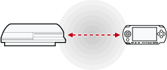

Next, I'll explain how to install games and apps from the site. Open the 'Select System' menu on your game / app of choice, you'll be prompted to save it somewhere. Here are the appropriate
locations.
PS1: dev_hdd0 > PSXISO
PS2: dev_hdd0 > PS2ISO
PS3: dev_hdd0 > PS3ISO
Apps: dev_hdd0 > packages (Installation via package manager is required here)
The menu also includes pointers as to where the files should be saved.
How to download games to your modded PSP through the PSFree PS3 Client:
Turn on your PSP system and connect it to your Playstation 3 via a miniUSB cable. Your PSP should automatically start 'USB Mode' if you have turned this feature off you may need to Select 'USB Connection' from the Settings menu.
Once you have downloaded the applicable files, go back to your XMB and navigate to your package manager. Find the 'Install Packages from root of mass storage device' option and there you should see the files that you downloaded, install each of the package files.
After completing these actions, you should see a new icon for webman mod on your XMB. You should be asked to run this to complete installation. Launch this application, your PS3 may reboot after this.
Next, we want to make sure that your games will display and run correctly. For this, we will install the PSFree Webman Mod Custom CFG. Click the link below and save the file to 'dev_hdd0 > tmp' after that, return to your XMB and navigate to Webman Games > Webman Setup and select 'Refresh webMAN Games & XMB'
How to prepare your PS3 for use with PSFree NO PC REQUIRED!
Note: Although other versions have been known to work, for the best experience it's recommended to be using 4.89 EVILNAT CFW. Please note, not every title is available for HEN straight away.
Insert a FAT32 USB stick into your PS3. Click on the applicable links below if you don't already have them and save the files to the root of your USB by hovering over your USB drive when prompted and pressing START on your controller.


Find a game listed as compatible with the PSP, open the 'Select System' menu and select PSP. In the list of download locations, you should now see your PSP. Select this and save the game to the 'ISO' folder of your PSP. After the download is complete, the game should now show up in your games list.